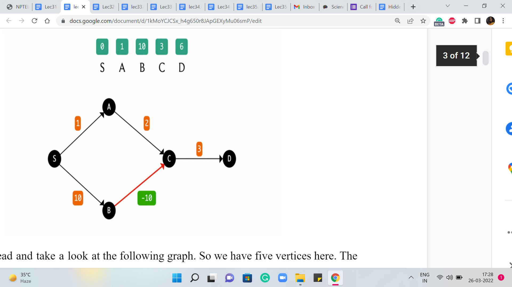
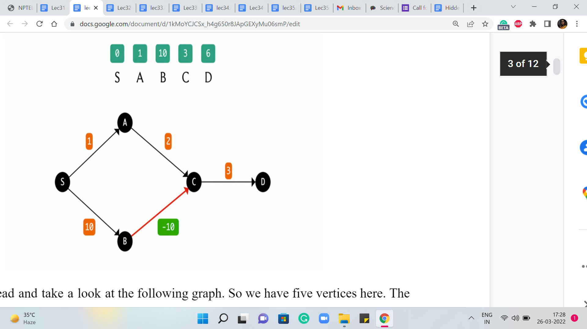
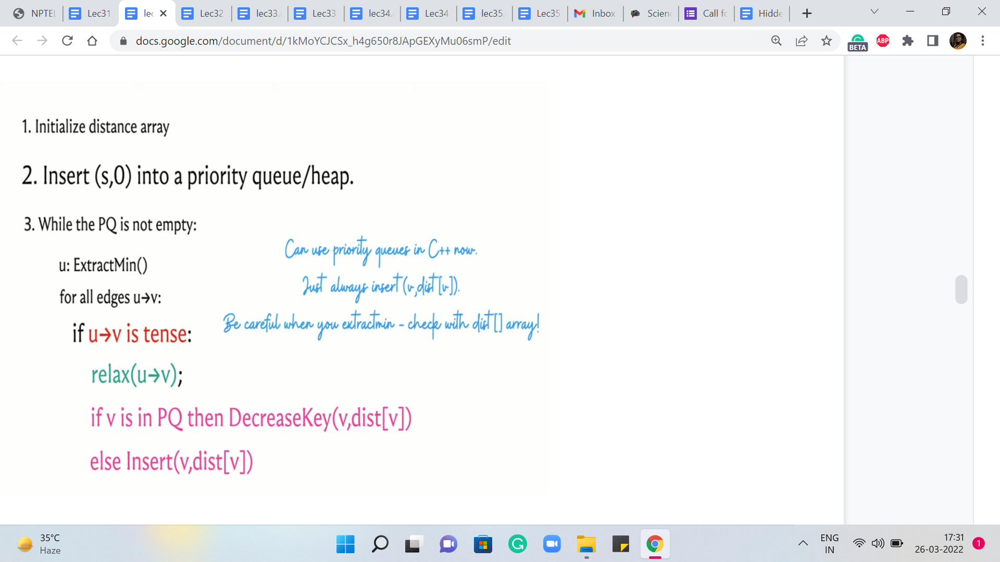
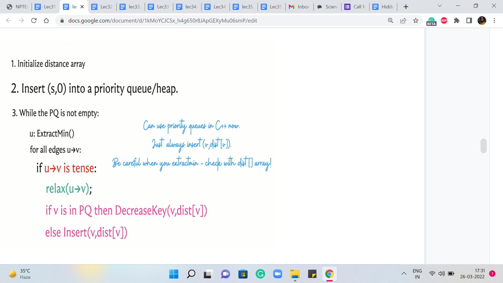
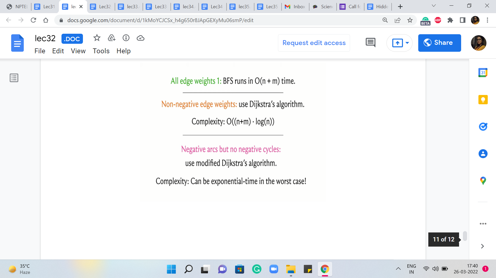
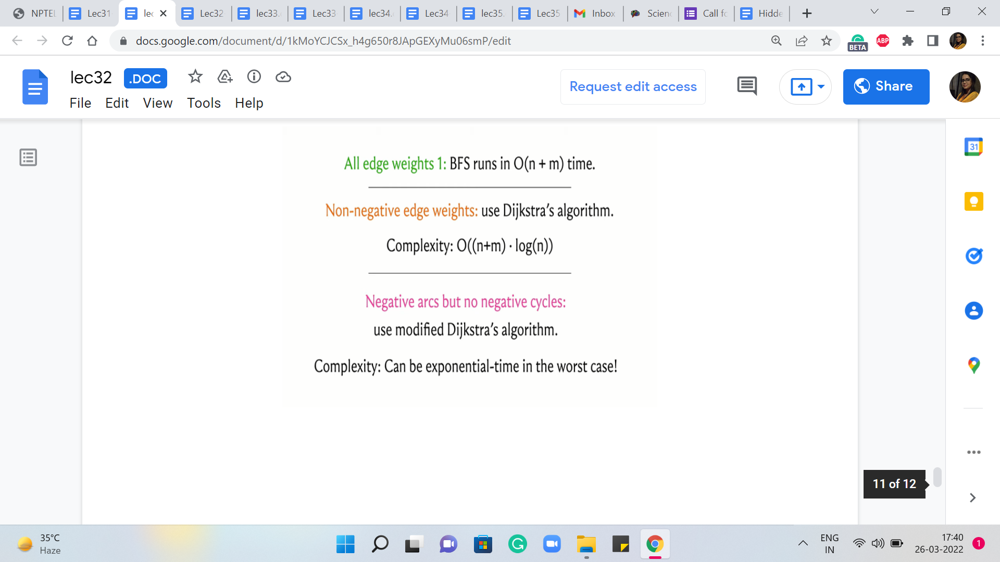

M 1 (Modified Dijkstra)
Lecture - 32
Shortest Paths - Module 1 (Modified Dijkstra)
(Refer Slide Time: 00:11 & 01:29)


So welcome back to the last segment of the first module in week six on shortest paths. As you might recall, we have been talking about the single-source shortest path problem throughout this module. And so far, we have figured out what to do when all the edge weights are uniform, and also when all the edge weights are guaranteed to be non-negative. In fact, in the previous segment, we saw an implementation of Dijkstra’s algorithm, which is an algorithm designed to handle precisely this kind of situation.
Now, the focus of this module is going to be the case when we do allow for negative edge weights, but we continue to avoid what are called negative cycles. So a negative cycle is simply a cycle whose total edge weight, when we just add up all the edges that are participating in the cycle, that total is negative. That is a negative cycle. And we are going to assume that we do not have such cycles in our graph.
We will have more to say about why negative cycles are problematic in the context of shortest paths in the next module. But for now, let us just take this as a given. So we are going to assume that our graphs do not have negative cycles, but they may still have edges with negative weights.
And remember that where we stopped last time, we said that such edges could be problematic. The proof of correctness was really dependent on the assumption that the edge weights were non-negative. So we also said that you could come up with concrete examples that break the algorithm if you allowed for edges that have negative weight.
(Refer Slide Time: 01:46 & 02:22)
 

So perhaps you have already come up with your own examples or you would like to come up with something yourself. So feel free to pause the video at this stage and play around a little bit because what I am going to do next to start off with an example just to make a point about the ways in which Dijkstra’s algorithm can fail in the form that we had discussed it last time. It could potentially give the wrong answer if you do allow for edges that have negative weights.
So let us go ahead and take a look at the following graph. So we have five vertices here. The source vertex is the leftmost vertex on your screen that is labeled S. And the edge weights are as given in the boxes. And what we have on top is the distance array that is going to be maintained by Dijkstra’s algorithm.
As we know in the beginning, S is the only vertex for which we know the distance from S, and that happens to be zero, and everything else is initialized to some very large number. So in the first iteration here, we can see that the edges from S to A and from S to B are the tense edges. So we are going to update their distance values to one and ten, respectively.
And now the job of S is done. So we are going to look for the next minimum value that we can find in the distance array and that happens to be the value of A. So we are going to explore all the edges that go out of A and there is one such, which is the edge from A to C, and this is indeed a tense edge.
So when we relax it, we update the value of the distance of C to 3 because that is the distance of A plus the weight of the edge from A to C, 1 + 2. And so that is the current state of the distance array. And now that we have finished processing A, we are going to extract the minimum value in this array again and this time, that is owned by the vertex C. And then again we are going to explore the edges that are incident to C, and see if these edges need to be relaxed.
So one edge incident on C is the edge from C to D, and as you can see here, this edge could certainly use some relaxing. The new value of the distance of D should be the sum of the value of distance to C + the weight of the edge from C to D. So that would be 3 + 3, amounting to 6.
The next minimum value in the distance array is owned by D. So that is the vertex that we are going to process next. Notice that D does not have any edges incident to it. So there is no work to be done. And then we run our final ExtractMin operation and we are going to see that we have only one value left in the set or the priority queue, whatever you are working with. And that is the value corresponding to vertex B.
So let us consider vertex B. You will see that there is an edge that is incident on B, the edge from B to C. And one question here is, is this edge tense? So let us think about this. The current value of the distance of C is three. On the other hand, if you look at the distance of B + the weight of the edge from B to C, then you get a value of 10 ± 10. And that is zero. So in fact, it is quicker to reach C from S via B. But unfortunately, we decided to take the longer route based on whatever we have discovered so far.
Intuitively, the issue with missing out on this edge is that, well, when we did discover B, that was already an expensive proposition and Dijkstra’s algorithm did not think that you are going to be able to do anything better in the future. And indeed if all the edge weights are guaranteed to be non-negative, then you can see here that there is no way that you could have improved on the distance of C by going via B because this edge from B to C would have had a weight of zero, at best, and then you could not possibly beat what you already have for C.
But somehow these negative edge weights coming in later could really mess around with your calculations. But at this point, notice that the algorithm cannot really do anything meaningful. The queue is empty. There is no way to actually register this improved distance and make sense of it.
(Refer Slide Time: 06:46 & 07:38)
 

So you can see why Dijkstra’s algorithm is going to fail in the presence of negative edge weights, and this is one example to illustrate that. Now we are going to make a very simple modification to Dijkstra’s algorithm that will actually fix this issue. And once again, you could pause the video here and think about what sort of a modification would you attempt if you had to work around such issues.
The natural thing seems to be to somehow allow for these relaxations even after the vertices at the other end of the edges have left the priority queue. Perhaps there is some way of bringing them back in. So please think about this hint, which pretty much gives me the modification that needs to be made, but still feel free to pause here and think this through before you continue the conversation with me.
Okay, so hopefully you have had a chance to think about this a little bit, and let us take a look at the modified version of Dijkstra’s algorithm here. So remember that previously, what we were doing was that we inserted all the values of the vertex distance pairs into our priority queue. Now what we are going to do is we are just going to insert ‘S,0,’ which is the only vertex about which we know anything at the start. And other than this, the priority queue is empty.
This is just a minor difference in the initialization. And what we are going to do going forward is that every time we relax a tense edge, we are going to ask ourselves – Is V, which is the vertex at the receiving end of the tense edge – we are gonna ask ourselves if V is already in the priority queue. If it is then as before, we decrease its value appropriately. And if it is not in the queue, we actually bring it back.
I said queue and what I really meant was the priority queue or the set or whatever it is that we are using to maintain information. So what we want going to do is make sure that V makes a comeback if an edge incident on V has been relaxed. So this way, it is possible that a vertex gets out of the queue and then comes back and is extracted again, and so on and so forth.
So you do have to think about whether a running time analysis from before holds up in the same way. As a matter of fact, it does not. But in some sense, if your input does not have negative edges then there will be a vertex to make a come back into the queue. So, then the analysis is pretty much the same.
But in the presence of negative weight edges, what happens is that the previous algorithm is going to have the same running time as before but possibly a wrong answer. And this algorithm is going to have potentially a worse running time, but that is the price you pay for getting to the right answer.
Now because the running times of both versions of Dijkstra’s algorithm are very similar in the absence of negative edges, you might as well always work with a modified version. Whenever you do not have negative edge weights, you are going to get a performance guarantee that is very similar to the original versions. You have nothing to worry about. And when you do have negative edge weights, then at least you do not have anything to worry about in terms of correctness, even though you are going to them may take longer to run.
In fact, it is a nice puzzle to think of adversarial examples for this version of Dijkstra’s algorithm. So you could try to come up with a graph where you have carefully engineered negative edge weights, which really forces this algorithm to take a really long time. I can tell you that the worst-case running time of this version of Dijkstra’s algorithm on graphs that do have negative eight edges is significantly worse than the worst-case running time when restricted to instances that do not have any negative edge weights.
Now, let me just make a quick comment here about the implementation. In this version of Dijkstra’s algorithm, you could actually use a priority queue directly, even if you do not have a DecreaseKey method for it. We are going to practice something called ‘lazy deletion.’ So basically, whenever we decrease the key value for a particular vertex, the way we are going to do it is just by inserting the new value.
And we are just going to let the old value be present in the priority queue, and we will just leave it there. And whenever we do an ExtractMin operation, we need to add a small check which basically tells us if this is the current value, or if it is one of those stale, older values that is lying around. And that check would essentially amount to comparing the value that we have in the priority queue with the value in the distance array.
If the value from the priority queue is higher than the value that we have in the distance array, then we know that this is a stale, old value and this just needs to be rejected from consideration. So let us just look at how this version works in code.
(Refer Slide Time: 11:53)

So here is the operational version of the pseudocode that you just saw. So notice that instead of a set, we are here using a priority queue. And if you were using Python, for instance, you could use a heap or something like this from the standard Python libraries.
And the way this works is pretty much the same as before, except that when you are updating, which is what is happening in the last line of code, when we were working with a set, what we said was that we will delete the old element and insert the new one. And here all that we are doing is we are inserting the new element without bothering to delete the old one.
And the reason this works is that whenever we perform an ExtractMin, we are able to distinguish between whether or not we are working with a value that is the current value, or whether it is one of those old and obsolete values. So you can see the line where the accompanying comment is a very important check.
That is the line of code that is ensuring that we are always working with valid values when we are doing ExtractMin. So we do ExtractMin as usual in the line that is just before it, and we do a quick check of the value that we extracted. We compare that with the value in the distance array, and if the value is larger than what we have in the distance array, then we know that this value is not a current value. It is an obsolete value. So we just move on.
So this implicitly implements the deletion, but we call it ‘lazy deletion’ for this reason. It gets deleted automatically in due course. We do not have to necessarily do the deletion when we are also doing the insertion in the update step. So that is how this works.
I should mention that this code is based on the code that is in the repository for the competitive programming book. And as usual, you will find a link to their repository in the description of this video, in case you would like to cross-refer it.
(Refer Slide Time: 14:05)

Alright, so with all this said, let me just summarize everything that we have learned so far. So, when all the edge weights are uniform then BFS works just fine. And this is your best bet, in terms of running time. So if you encounter a shortest path-based problem, if there is a problem that can be modeled as a shortest path situation, and all the edge weights happen to be uniform, by all means, go ahead and use BFS. It is elegant, it gets the job done, and it is fast. So that would be the right choice.
Now in case you do have edge weights, then you could either use Dijkstra or modified Dijkstra. In particular, if you do have negative edge weights then you should not be using the original form of Dijkstra’s algorithm. Because as we saw, that could give you an answer. So in that case, you definitely want to make sure that you have the modification accounted for. Both of these versions have similar running times when all the edge weights are guaranteed to be positive.
So, if you like, you could always default to using what is called modified Dijkstra. In fact, if you look at the reference for this module, this shortest paths chapter in the ‘algorithms text’ by Erickson, the author in that text stays that he really prefers to call modified Dijkstra ‘Dijkstra’s algorithm’ because he thinks the algorithm that is correct for a larger class of graphs is probably the one that should be used by default. So you could certainly do that.
(Refer Slide Time: 15:59)
 

On the other hand, if you do end up using the default version, then just remember to be careful about not using it if the weights can potentially be negative. Now, in terms of implementation, we saw that the original version of Dijkstra can be implemented using sets in C++ and this will also work in Java, for example. But the modified version can be implemented directly with a priority queue combined with this idea of lazy deletion.
So there is an important check that you have to do whenever you are extracting the minimum to make sure that you are not working with an obsolete value. But once you do that, everything works out great. And if you are a Python user then you might just want to stick to using this version because that is the one that can be implemented in a straightforward way.
So, all of this is great for up to the situation when you have graphs that have potentially negative edge weights but no negative cycles. How does the presence of negative weight cycles shake things up? Well, quite a bit actually. So if you think about modified Dijkstra’s algorithm and if you try to simulate it on graphs that have negative weight cycles, you might discover for yourself that this algorithm potentially gets into an infinite loop, which is of course, not a good thing and a situation that you want to definitely avoid.
So whenever you are working with a problem that is based on shortest paths, and you have negative edge weights being allowed, please do check for whether you have been told that there is a promise that there are no negative weight cycles. If such a promise is made explicit, then of course you can go ahead and use all the machinery that we have talked about so far.
But without this assumption and with the possibility that there may be negative weight cycles, you want to be a little more careful. And in the next module, we are going to talk about how we can detect the presence of negative weight cycles, and how we can compute the shortest paths when we are confident that the graph does not have negative weight cycles. So all of that is coming up. So this is a good place to stop here, and I will see you back in the next module!